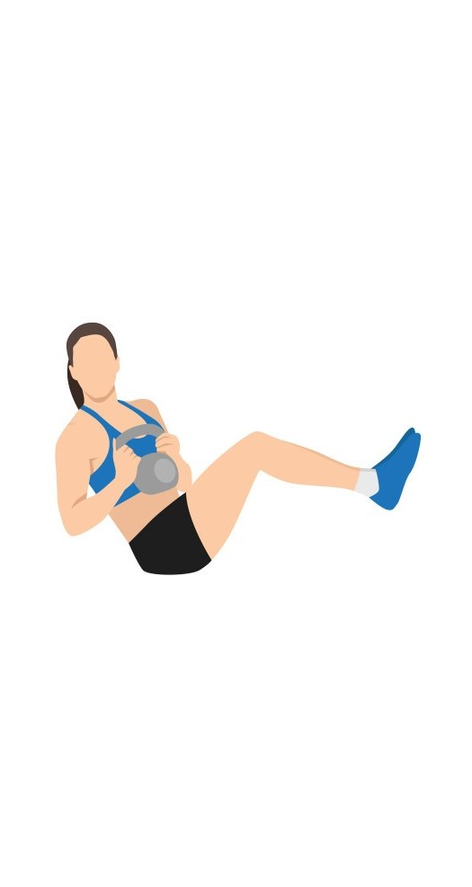

Exercise Description
Russian twists target the core and obliques. Sit on the floor with your knees bent and feet lifted. Lean back slightly and hold a weight or medicine ball. Twist your torso to one side, then to the other, while keeping your core engaged.
Reps and Sets
Beginners: 3 sets of 15-20 reps per side
Weights: 4.5-5 kg per-hand
Rest time between each set: 30secs
Video Implementation